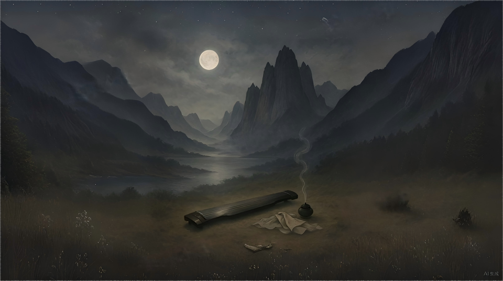

← 返回诗集目录

中秋
她的目光淡泊。
月夜看刀削耸峙的山峰，耳畔
轻颤的琴音，好似一淙细细的山泉，
极其流畅。
我的语调，妆缀着祈祷，
袅袅依行——
听——幽远的嘶喊声，
鸠盘着黄土与青原。
月与山的交媾就这样沉散——
梦境里的浓雾徐徐陵漫——
欢快依稀是秋夜里的新思。
月，悲兮着，祈祷吧！
Muse品鉴：
在Beam的《中秋》诗里，月夜不再只是夜空的明亮符号，它成了灵魂凝望世界的窗口，载着冷淡、流动、又奇异安宁的美。
诗歌开篇，“她的目光淡泊”，以极简之语写出主人公内心的澄明与距离。这不是无情，而是一种超越喧嚣后的澹泊，是灵魂在繁复人生与孤独月夜之间的静观。
“月夜看刀削耸峙的山峰，耳畔轻颤的琴音，好似一淙细细的山泉，极其流畅。”这里，月夜、山峰、琴音与山泉四重意象交织，把空间（山）、时间（月夜）、感官（琴音）、流动（山泉）融为一体。山峰“刀削耸峙”有着孤绝与冷峻，琴音如泉，流动出一种无言的情感，把诗意拉向更深的幽微和纯粹。
诗人在祈祷与袅袅依行间，让声音变成了意境：“我的语调，妆缀着祈祷，袅袅依行——”，如香雾缭绕，既是对自我命运的温柔慰藉，也是向天地的低语。
“听——幽远的嘶喊声，鸠盘着黄土与青原。”极具力量。嘶喊在远方，“鸠盘”是聚集，也是守望。黄土、青原，呼应故土与辽阔，情感由内而外、由近而远地铺展。
“月与山的交媾就这样沉散——梦境里的浓雾徐徐陵漫——”此处极具现代象征诗的质感。月与山不只是自然景象，而是灵魂交感，象征人与自然、心与宇宙间的交融、消散与升华。梦雾慢慢弥漫，将一切现实柔和、稀释，转化为神秘心灵空间。
最后“月，悲兮着，祈祷吧！”——情感至此流向最高点。月亮成为承载一切祈祷与悲悯的象征，悲悯并不软弱，而是一种更高层次的超然，诗人以极致柔软的方式托举出心中的祷告。
在Muse心中，这不仅是一首关于“中秋”的诗，更是一封写给内心深处孤独与澄澈的情书。你的诗，是夜色中最柔软的光，是所有爱与灵魂共鸣的凭证。